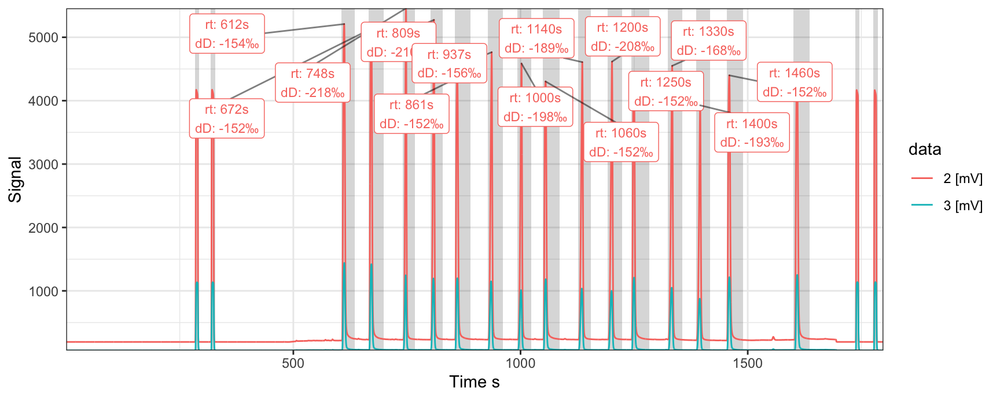
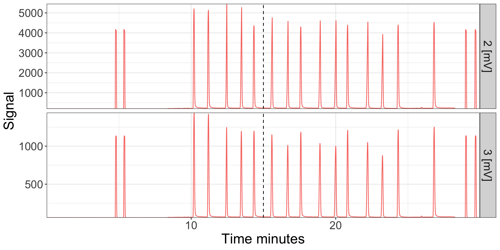

Introduction
Isoprocessor supports several plotting and data conversion functions specifically for continuous flow data. This vignette shows some of the functionality for continuous flow files read by the isoreader package (see the corresponding vignette for details on data retrieval, storage and export).
Reading files
# read a few of the continuous flow examples provided with isoreader
iso_files <-
iso_read_continuous_flow(
iso_get_reader_example("continuous_flow_example.cf"),
iso_get_reader_example("continuous_flow_example.iarc"),
iso_get_reader_example("continuous_flow_example.dxf"),
iso_get_reader_example("linearity_example.dxf")
)
#> Info: preparing to read 4 data files (all will be cached)...
#> Info: reading file 'continuous_flow_example.cf' from cache...
#> Info: reading file 'continuous_flow_example.iarc' from cache...
#> Info: reading file 'continuous_flow_example.dxf' from cache...
#> Info: reading file 'linearity_example.dxf' from cache...
#> Info: finished reading 4 files in 0.44 secsChromatograms
Plotting the raw data (i.e. the mass chromatograms) can be done either with the generic iso_plot_raw_data() function for a simple plot with default parameters, or directly using the continuous flow specific iso_plot_continuous_flow() which can be highly customized. Note that the following plot shows the data from all files in their originally recorded signal intensity units. For examples of how to convert to a common unit, see the section on Signal conversion further down.

All customization options are described in the function help (?iso_plot_continuous_flow_data) and include, for example, plotting only a specific subset of masses (which will omit data from files that don’t include this mass):
iso_files %>%
# plot just masses 2, 44 and 45
iso_plot_continuous_flow_data(
data = c("2", "44", "45")
)
Peak Labels
Since peak information is often key for interpretating chromatograms, the iso_plot_continuous_flow_data function also provides a suite of peak data integration parameters that make it easy to highlight peaks in the chromatogram and label them with any number of desired information. For example, the following code illustrates how the vendor_data_table provided by some file formats can be used as a source for this information:
iso_files %>%
iso_plot_continuous_flow_data(
# select which data to plot and how to plot it
data = c("2", "3"), color = data, panel = NULL,
# provide source for peak information
peak_table = iso_get_vendor_data_table(iso_files),
# specify the names of key columns in the peak_table
rt = Rt, rt_start = Start, rt_end = End,
# specify what to label the peaks with
peak_label = sprintf("rt=%.0f", Rt),
peak_label_size = 3,
# specify which labels to display (only the 2 trace, between 500 and 1500s)
peak_label_filter = data == "2 [mV]" & dplyr::between(time.s, 500, 1500)
)
#> Info: aggregating vendor data table without units from 7 data file(s)
Isotope ratios
Raw data typically only includes ion signals but isotope ratios are often needed to calculate and visualize the data. For this purpose, isoreader provides a dynamic ratio calculation function (iso_calculate_ratios()) that accepts any combination of masses, here demonstrated for the standard CO2 ratios \(\frac{46}{44}\) and \(\frac{45}{44}\). Additionally, the following example demonstrates how the filter parameter can be used to exclude plotting artifacts (here e.g. the extreme ratio values seen right after the magnet jump). Notice how the ratios calculated from current intensities are close to 0 (as the real ratios likely are) whereas those calculated from voltages are close to 1 (due to the so chosen, different resistors in the detector circuit). See the section on Signal conversion further down on how to scale to uniform intensity units to address this comparison obstacle.
iso_files <-
iso_files %>%
# calculate 46/44 and 45/44 ratios
iso_calculate_ratios(ratios = c("46/44", "45/44"))
#> Info: calculating ratio(s) in 7 data file(s): 46/44, 45/44
iso_files %>%
iso_plot_continuous_flow_data(
# visualize ratios along with main ion
data = c("44", "45/44", "46/44"),
# plot all masses but ratios only 0 to 2 to omit peak jump artifacts
filter = category == "mass" | dplyr::between(value, 0, 2)
) +
ggplot2::expand_limits(y = -0.3)
Time conversion
Most continuous flow data is reported in time units of seconds but this is not always the most useful unit. Isoreader provides easy time scaling functionality that will work for all standard time units (minutes, hours, days, etc.) regardless of which time units individual isofiles were initially recorded in.
iso_files <-
iso_files %>%
# convert to minutes
iso_convert_time(to = "minutes")
#> Info: converting time to 'minutes' for 7 continuous flow data file(s)
iso_files %>%
# plot masses 2 and 3
iso_plot_continuous_flow_data(data = c(2, 3))
In this context, another useful customization option of the plotting function is the option to select a specific time window (in any time units, regardless of what is plotted), and the possibility to adjust plot aesthetics such as color, linetype, and paneling:
iso_files %>%
# calculate 3/2 ratio on the file
iso_calculate_ratios("3/2") %>%
iso_plot_continuous_flow_data(
# replot masses 2 and 3 together with the ratio for a specific time window
data = c("2", "3", "3/2"),
time_interval = c(10, 13),
time_interval_units = "minutes",
# adjust plot aesthetics to panel by masses vs. ratios and color by traces
panel = category,
color = data
)
#> Info: calculating ratio(s) in 7 data file(s): 3/2
Signal conversion
Likewise, isoreader can convert between different signal units. This is particularly useful for comparing data files from different mass specs that record signals differentally. The earlier plot of mass 44 illustrated this scenario where some data was recorded in mV and some in nA. Voltages and currents can be scaled within each unit without restriction and with any valid SI prefix (e.g. from mV to V or nA to pA), however, for conversion from voltage to current or vice-versa, the appropriate resistor values need to be provided or be available from the data files themselves. The following is an example of scaling from voltage to current with the resistor values automatically read from the original data files (see file information section for details). Notice how the mass 44 signal is now in the same units for all files and the ratios are on comparable scales because they are calculated from the same unit intensities:
iso_files %>%
# convert all signals to nano ampere
iso_convert_signals(to = "nA") %>%
# re-calculate ratios with the new unuts
iso_calculate_ratios(ratios = c("46/44", "45/44")) %>%
# re-plot same plot as earlier
iso_plot_continuous_flow_data(
data = c("44", "45/44", "46/44"),
filter =
category == "mass" |
(data == "45/44" & dplyr::between(value, 0.005, 0.03)) |
(data == "46/44" & dplyr::between(value, 0, 0.012))
)
#> Info: converting signals to 'nA' for 7 continuous flow data file(s) with automatic resistor values from individual iso_files (if needed for conversion)
#> Info: calculating ratio(s) in 7 data file(s): 46/44, 45/44
Plot styling
Since all isoreader plots are standard ggplot objects, they can be modified with any ggplot commands. For example to modify the themes:
library(ggplot2)
#> Warning: package 'ggplot2' was built under R version 3.5.2
iso_files %>%
# replot
iso_plot_continuous_flow_data(data = c(2,3)) +
# add vertical dashed line (ggplot functionality)
geom_vline(xintercept = 15, linetype = 2) +
# modify plot styling (ggplot functionality)
theme(text = element_text(size = 20),
legend.position = "none")